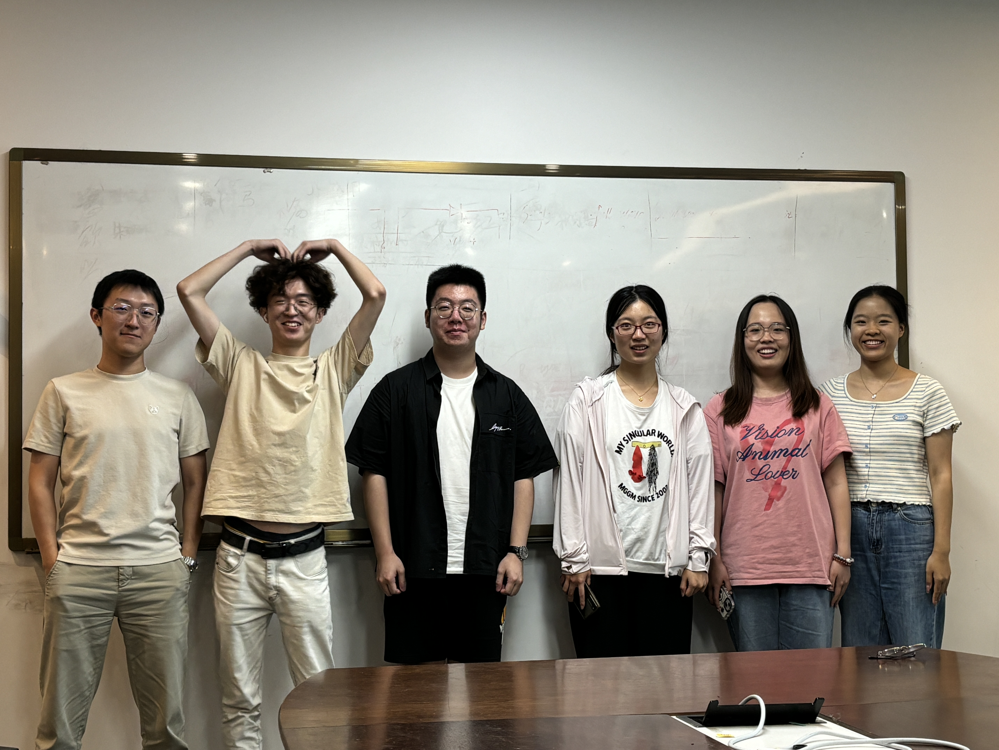
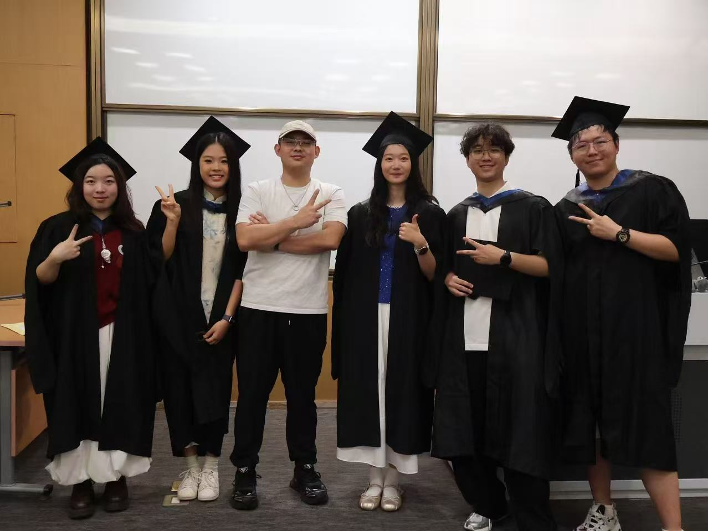

Supervisor
MEMBERS
Our members.
Our group brings together researchers and students working across semiconductor devices and integrated circuit design.


XJTLU
Leader
Rui Li
Co-Leader
Shenjian Zhang
External Mentor
Yuxin Guan
Current members
SURF 2026
- Sunxing Wang
- Jiayi Ding
- Wenyu Cheng
- Zecheng Wang
- Xi Wang
- Xi Lei
- Jinxuan Che
- Qirui Teng
SURF 2025
- Ruihan Liu
- Xinyu Chen
- Xincheng Guo
Alumni
SURF 2025
-
Yuxuan Hu
- Destination
- CMU
- Research area
- Digital IC design / mixed-signal circuits
-
Zihan Xu
- Destination
- TUM Asia (Singapore)
- Research area
- Mixed-signal circuits
-
Yilun Zhang
- Destination
- University of Melbourne
- Research area
- Electrical engineering
-
Xinzhe Wang
- Destination
- University of Michigan
- Research area
- VLSI / analog IC design
SURF 2024
- Jiaxiu Xu
-
Yu Sun
- Destination
- TUM Asia (Singapore)
- Research area
- Optics
- Wenjing Qu
- Xinyi Chen
- Bowen Duan
-
Zetong Li
- Destination
- UC Berkeley
- Research area
- Analog IC design / TCAD